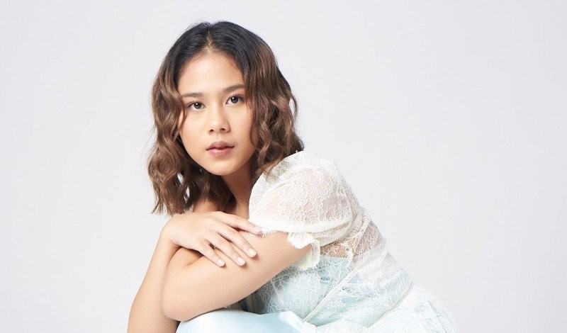

About
Nadin Amizah (lahir 28 Mei 2000) adalah penyanyi dan penulis lagu berkebangsaan Indonesia.
Guide to Nadin Amizah
Nadin Amizah (lahir 28 Mei 2000) adalah penyanyi dan penulis lagu berkebangsaan Indonesia.
Nadin mulai dikenal publik saat masih di bangku SMA. Ia berkolaborasi dengan Dipha Barus membawakan lagu single "All Good" pada tahun 2017. Nadin dan Dipha juga muncul mengenalkan lagu itu untuk pertama kalinya di panggung besar Djakarta Warehouse Project.
Sebelum memulai karier menyanyinya, Nadin memulai debut di salah satu program stasiun TV swasta Trans TV "Social Media Sensation" pada tahun 2016. Lewat Label Sorai, Nadin telah mengeluarkan empat single sampai dengan tahun 2019 yakni “Rumpang” di bulan September 2018, “Sorai” di bulan Januari 2019, “Star” di akhir Maret 2019 dan “Seperti Tulang” di 27 September 2019. Nadin juga sudah berkolaborasi dengan beberapa penyanyi, dengan menghasilkan beberapa lagu seperti “Beauty and the Beast” bersama Adera, “Teralih” dengan Matter Halo dan terakhir lewat lagu “Amin paling Serius” bersama Sal Priadi. Pada 28 Mei 2020, Nadin merilis Album "Selamat Ulang Tahun".
Meski terbilang masih baru, Nadin Amizah berhasil menyabet piala paling bergengsi di industri musik Tanah Air. Tahun 2019 lalu Nadin meraih dua piala AMI Awards. Sebelumnya, Nadin masuk dalam kategori AMI Awards tahun 2017.
Sejak duduk dibangku SMA, Nadin aktif sebagai penyanyi cover di YouTube dan Instagram. Ia membawakan beberapa lagu penyanyi terkenal diantaranya bright eyes dari lua, From the Dining Table dari Harry Styles dan Half The World Away dari Aurora. Tak hanya sebagai penyanyi cover, Nadin juga pernah mengikuti ajang pencarian bakat di salah satu program stasiun televisi swasta bertajuk Social Media Sensation. Dalam ajang tersebut, Nadin keluar sebagai juara ketiga.
Penyanyi Nadin Amizah resmi mendapatkan gelar sarjana bidang ilmu komunikasi di London School of Public Relations (LSPR) pada Kamis (1/12/2022). Meski terkenal sebagai penyanyi, Nadin Amizah tetap mengutamakan pendidikan tingginya. Bahkan, Nadin dinyatakan lulus tepat waktu dengan nilai yang sangat memuaskan.